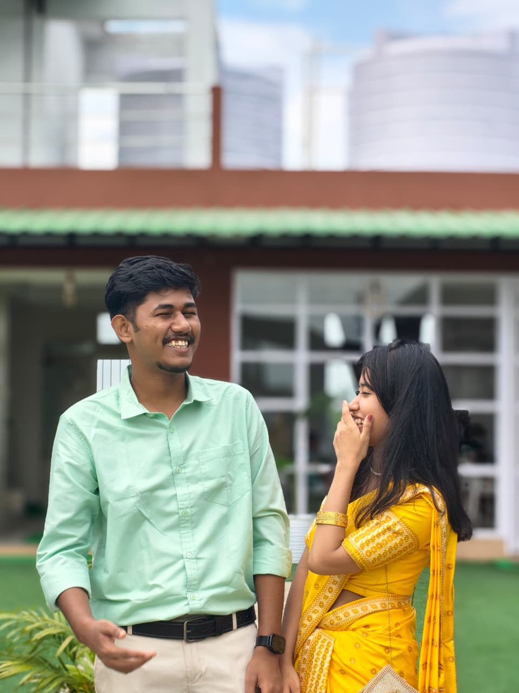
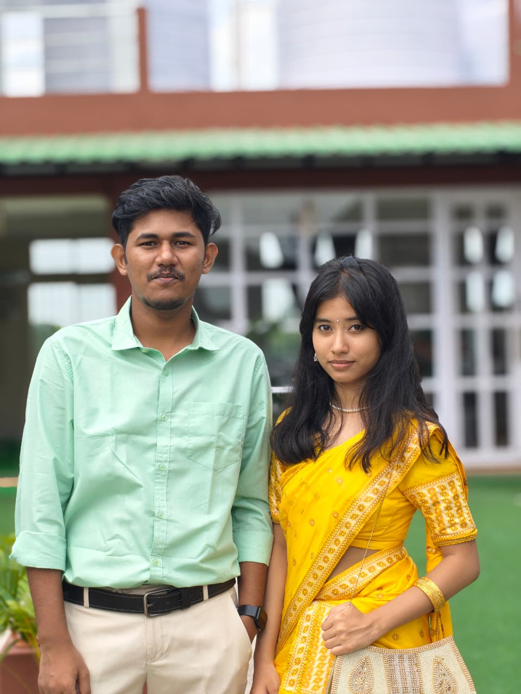
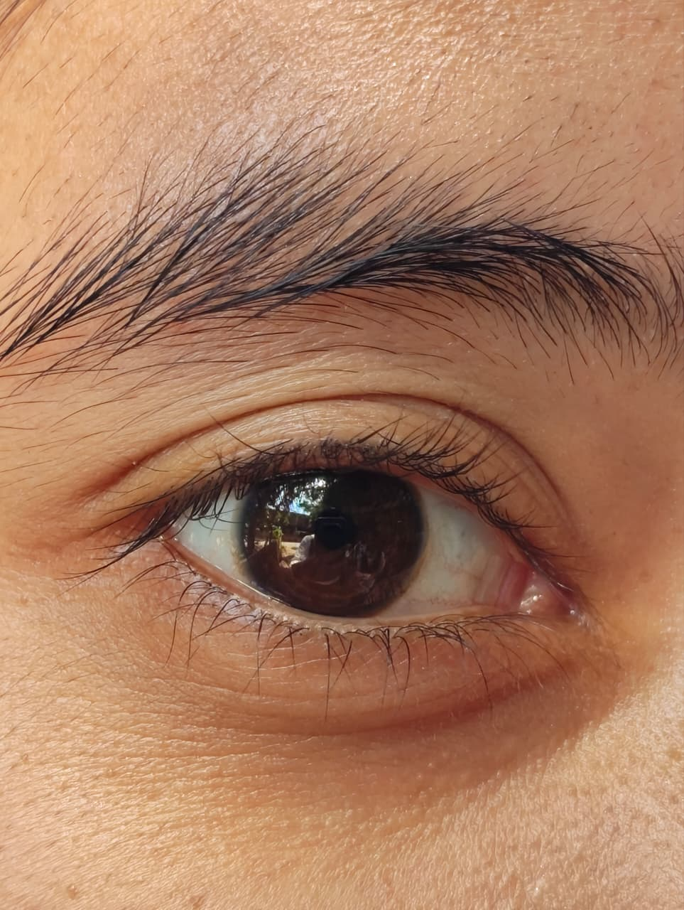

01 — A LITTLE HAPPINESS
A little corner of my heart
For You, Lily ♡
Some memories deserve a little more time. So here's something I made just for you. 🌷

A little moment to keep ♡

One for the memory book✨
02 — HOW IT ALL BEGAN
SOMEHOW, YOU CAME ALONG.

Deeply fall for👀
03 — The Eyes
I'm glad our paths crossed.
One last thing
Happy Birthday,My Lady💗
With lots of warmth,
Someone who thinks you're special ♡ ~your's Anyo